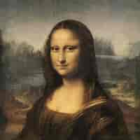
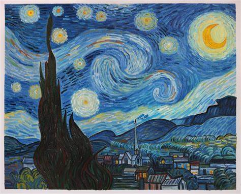
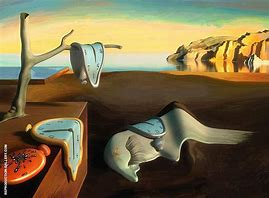
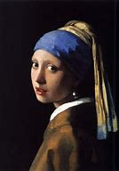
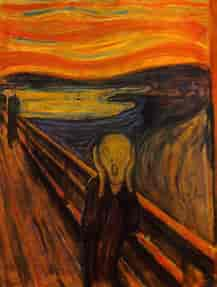
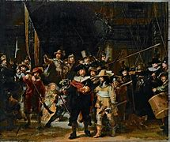

Mona Lisa
Leonardo da Vinci, 1503-1506
This piece is considered a masterpiece of the Italian Renaissance.

The Starry Night
Vincent van Gogh, 1889
During his stay at an asylum, Van Gogh focused on the objects around him.

The Persistence of Memory
Salvador Dalí, 1931
This is one of the most notable pieces of Surrealist art.

Girl with a Pearl Earring
Johannes Vermeer, 1665
This is a piece of art known as a tronie.

The Scream
Edvard Munch, 1893
One of the most familiar pieces of modern art.

The Night Watch
Rembrandt, 1642
This painting goes by another name, \n "Militia Company of District II Under the Command of Captain Frans Banninck Cocq".